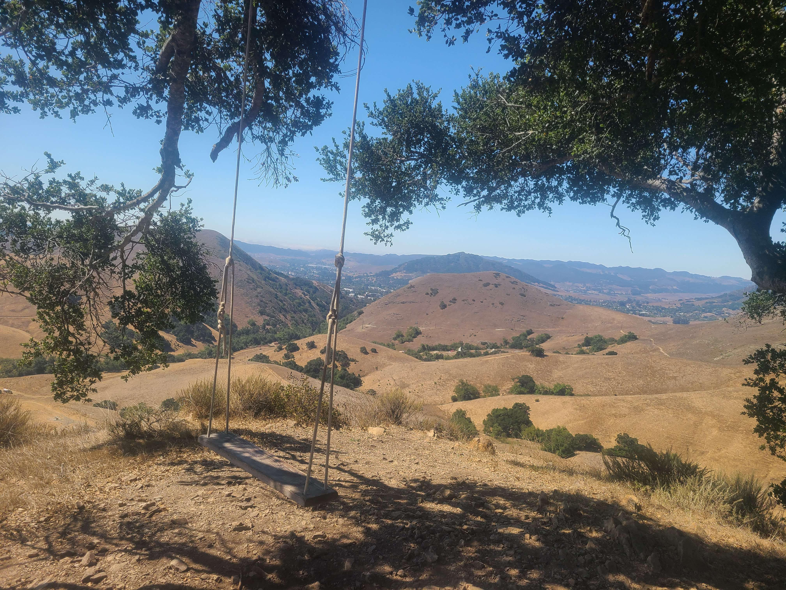

Jumpstart Program
7/28/2025 - 8/30/2025
In the Summer of 2025, I participated in the JumpStart program at Cal Poly. The Jumpstart program is a programmed offered to incoming transfer students who major in ME, CS, and SWE in an effort to curve the phenomenon known as "transfer shock". Transfer shock refers to the intense drop in GPA transfer students experience when they first transfer to a new college. The program was 5 Weeks and covered topics such as Algorithms, On-Campus Resources, Club and social life on campus, as well as workshops to fill in any gaps of knowledge transfer students may have. Within this program, I gained a strong base in algoritm design and analysis, ineterests in the club Hack4Impact, resouces to help me succeed at cal poly, and my tight knit community of friends and peers. Overall, I'm incredibly greatful for the Jumpstart Program and the impact it had on my transition to Cal Poly.
Back to all blogs